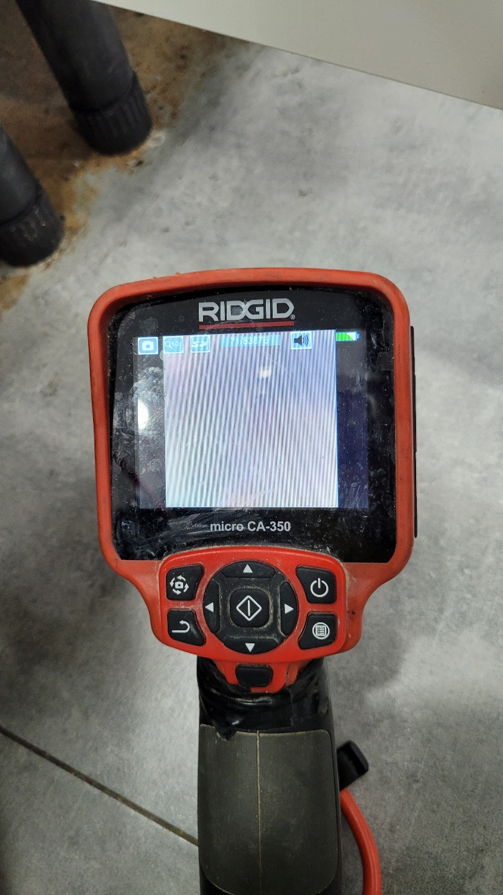
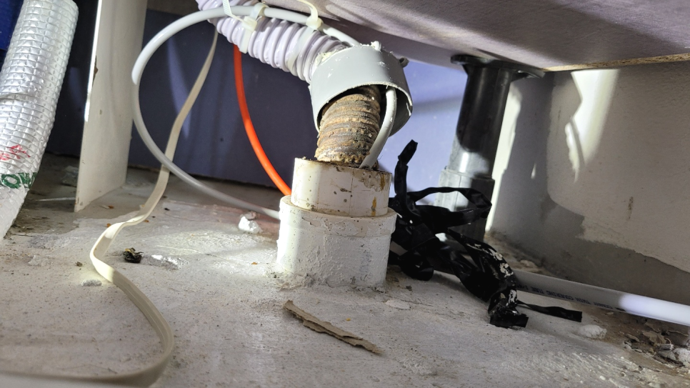
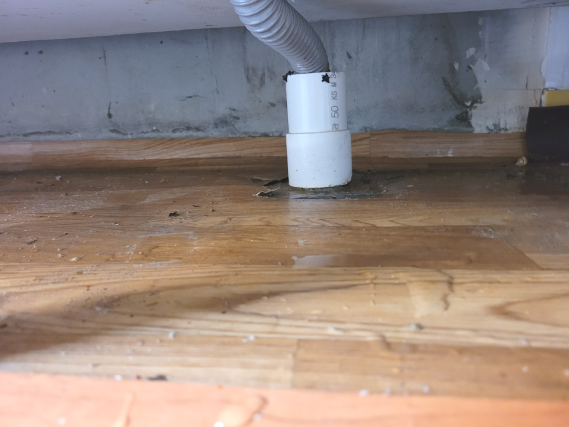
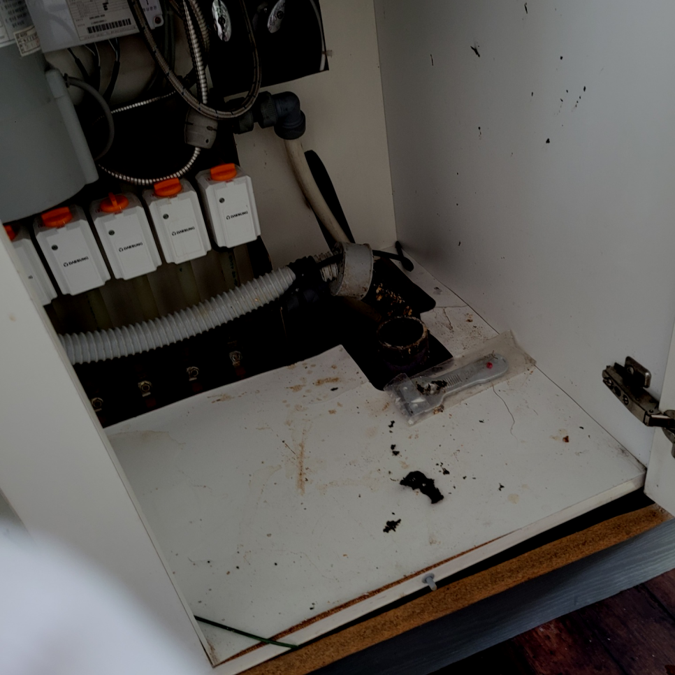
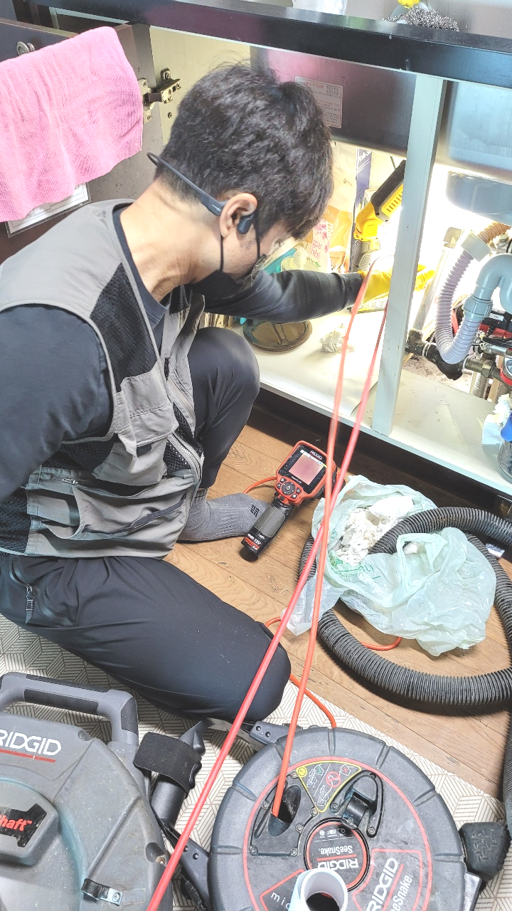
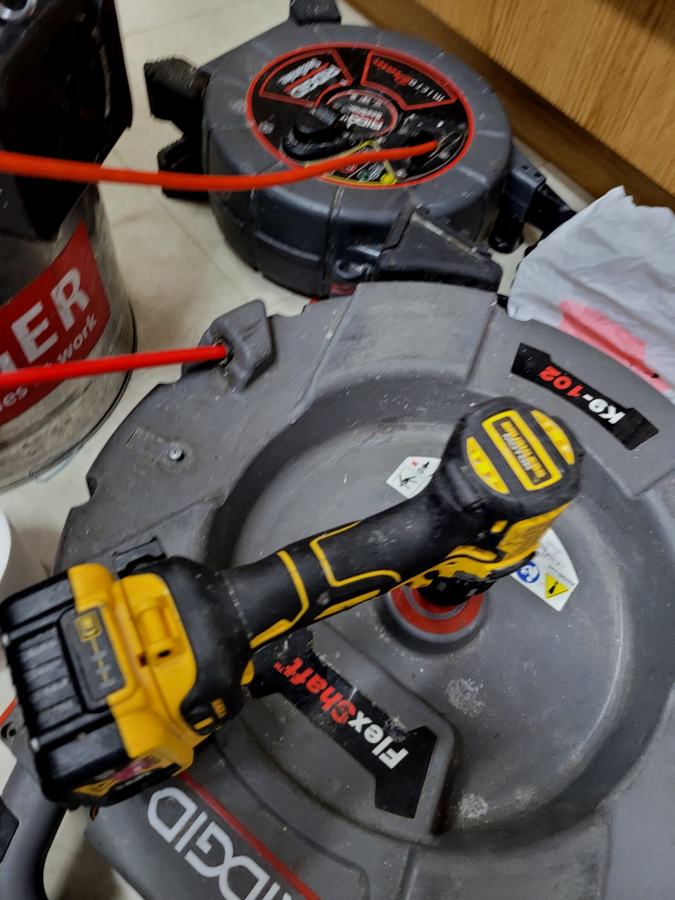

🏠 용인 구성동 싱크대막힘 뚫음 마북동 배수관 기름때역류 배관청소
용인 싱크대막힘 전문 시공 후기

📋 작업 개요
- 위치: 용인
- 서비스 유형: 싱크대막힘, 변기막힘, 하수구막힘, 배관막힘, 역류해결, 뚫는업체, 배관청소, 설비공사
- 작업 일시: 2023. 11. 3. 0:14
- 업체명: 하수구수사대 (010-5615-2118)
🔍 문제 상황
어서오세요
설비전문업체 "하수구수사대"를 찾아주셔서 고맙습니다^^
안녕하세요! 어디든 상관없이 배관막힘 현장이라면 로켓방문 출동으로 누구보다 신속하고 정확하게 속시원히 뚫어드리겠습니다.
하수관금방 해결되는 가벼운 경우도 있지만 문제 파악이 확실히 안되는 일은알아서 시도하기보단 믿을 만한 업체에 곧장 의뢰하시는 편이 좋습니다.
용인 구성동 싱크대막힘 뚫음 마북동 배수관 기름때역류 배관청소

🔎 원인 분석
💡 전문가 진단: 용인 구성동 싱크대막힘 뚫음 마북동 배수관 기름때역류 배관청소
저희는 퇴수구의 내부를 전체적으로 확인을 해야 했고 막힘 문제가 어떻게 발생했는지를 정확하게 파악해 볼 필요가 있었습니다. 그래서 건물 외벽으로 주위를 돌면서 퇴수구를 꼼꼼하게 점검하는 작업을 하였는데요.
퇴수 구조를 확실히 이해하고 있어야만 작업 진행을 하기 전에 어떤식으로 작업을 할지 막히게 되었을지 간단하게 예상을 할 수도 있고 진행을 할때 이런 전문지식이 있어야 작업시간 단축에 큰 도움이 됩니다.
나도 모르게 음식물 찌꺼기를 버려서 막힐 때도 있지만 이런 경우를 제외하고는 몇 년 동안 고여있던 이물질들이 누적되어하수관 내부에 계속해서 쌓이다 보니 물길 이외에는 더 이상 내려갈 수 없어 막히게 되지요.
여러분이 생각하실 때 배출구막힘이 어느곳을 골라야 재빠른 해결이 가능하며 보다 심각한 피해를 입지 않고 신속한 처리가 되는지에 대해서 알려드릴테니 조금이나마 도움이 되시기를 바랍니다.
이럼으로 인해 하수관장비를 얼마나 갖추고 있는지 면밀히 알아보세요. 점성이 있는 기름때들은 소량일지라도 하수관 안에 남겨두게 되면 쌓이기 시작해서 소량이었던 것이 증식해 버리게 되어 틀어막게 되는 것인데요.

🔧 작업 과정
게다가 악취까지 발생하고 있는 상황이었기에 신속한 대처가 필요했습니다. 보다 정확하게 원인을 알아내고자, 트랩을 열어 배관을 자세하게 확인해 보았는데요. 직접 확인하기 어려운 부분은 배수 배관 내시경 장비를 사용하여 확인했습니다.
주로 고가의 하수관장비들을 종류별로 가지고 있는 업체가 많지 않습니다. 그에 따라 상황에 맞춰 유연하게 대처할 수 있는 장비들을 활용하여 해결할 수 있는 방안을 마련해드리고 있습니다.
하수관내부 모습은 육안상 판별이어려운 특징때문이죠. 예방히기위해 하수관으로 찌꺼기들이 들어가지않도록 주의를 기울여야합니다.이럴때 요긴한것이 거름망같은 것들인데요
이렇기때문에상담하실때 위급한목소리로 도움을청하기도하는데요.그저놔두기만하면 증상이완화될까요? 그러시지는 않겠지만 이용하지않고 냅두셔도퇴수구 안에머물러있는 음식물쓰레기가 내뿜는냄새는 설명하기가 어려울정도에요
대부분은 심하게막힌것이 아니면 기본금액으로 수리할수있지만 낙후된하수도이거나 엄청나게깊숙한곳까지 찌꺼기가쌓여있다면 상황이복잡해지기때문에 추가금액이 발생됩니다
확실하게 아는것이없기에 대처법이 생각이안나기에 손을댈수 없게되어버리죠.퇴수뚫음 어떻게든하려고 하시지말고 다른해결수단을 고민하셔야돼요.
샤프트 장비로 분쇄를 하는데 이번에 저희가 사용한 장비는 기름 슬러지 전용 장비로 벽면에 붙은 기름까지 제거가 가능한 장비입니다.현장에서도 사용한 동일 제품으로 강력한 힘을 가지고 있는 제품이죠.
배수관배관 내부는 우리가 생각하는 것 이상으로 많은 변수에 노출되어 있습니다. 가장 대표적인 예가 배수관배관 손상인데요. 워낙 길게 매립되어 있는 데다 주변 공사, 충격 등에 의해일부가 무너져 내린다던 자 손상될 확률은 얼마든지 있습니다.


✅ 작업 완료
어느 지역에 계시든지 수도권 모든 곳에서 대기 중이기에 문의를 받자마자 60분 안으로 달려갑니다. 위급할 땐 곧바로 도움받으실 수 있기에 이점이 크게 다가오실 겁니다.
#하수구막힘 #하수구뚫음 #하수구역류 #씽크대막힘 #싱크대역류 #오수관막힘 #하수구청소 #욕실하수구막힘 #변기막힘 #하수구뚫는비용 #싱크대수리 #화장실막힘




⚠️ 주방 싱크대 배관 막힘 예방 수칙
- ✅ 기름기가 묻은 식기나 프라이팬은 설거지 전 키친타올로 반드시 기름때를 닦아내세요.
- ✅ 주기적으로 싱크대 개수대에 뜨거운 물을 가득 받아 한 번에 내려 배관 내부 기름을 씻어내세요.
- ✅ 배수구 거름망을 미세한 필터로 사용하시고 음식물 찌꺼기가 틈으로 새어 들지 않게 관리하세요.
- ✅ 베이킹소다와 식초를 뜨거운 물과 함께 일주일에 한 번씩 부어주면 배관 살균과 막힘 예방에 좋습니다.
💡 핵심 정리
- 확실한 장비 작업(내시경 점검 및 샤프트 스케일링)으로 원인을 뿌리 뽑습니다.
- 작업 후 1년 이내에 동일한 부위 재발 시 100% 무상 A/S 서비스를 보장합니다.
- 서울 · 경기 · 인천 전 지역에 24시간 언제든 긴급 출동할 수 있도록 항시 대기 중입니다.
❓ 자주 묻는 질문 (FAQ)
🚨 용인 싱크대막힘 문제로 고민이신가요?
정확한 원인 진단과 확실한 시공으로 재발 없는 해결을 약속드립니다.
24시간 긴급 출동 | 서울 · 경기 · 인천 전지역 | 1년 내 재발 시 무상 A/S